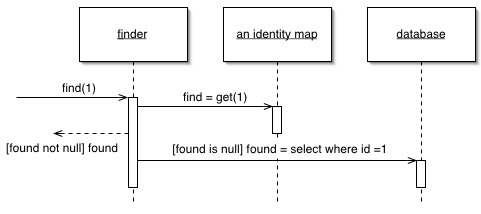

Identity Map (Карта присутствия / Карта соответствия)

Паттерн проектирования Identity Map
Описание Identity Map
Обеспечивает однократную загрузку объекта, сохраняя данные об объекте в карте соответсвия. При обращении к объектам, ищет их в карте соответсвия.
Одна старая пословица постулирует, что человек с двумя часами никогда не знает, сколько сейчас времени. И если уж двое часов вносят путаницу, то с загрузкой объектов из БД может получиться гораздо большая путаница. Если разработчик не достаточно аккуратен, может получиться, что он загрузит данные из БД в два объекта. Потом, когда он сохранит их, получится путаница и конкуренция различных данных.
Более того, с этим связаны проблемы производительности. Когда дважды загружается одна и та же информация, увеличиваются затраты на передачу данных. Таким образом, отказ от загрузки одних и тех же данных дважды не только обеспечивает корректность информации, но и ускоряет работу приложения.
Паттерн Identity Map (Карта присутствия / Карта соответствия) хранит записи о всех объектах, которые были считаны из БД за время выполнения одного действия. Когда происходит обращение к объекту, проверяется карта соответствия (присутствия), чтобы узнать, загружен ли объект.
Использована иллюстрация с сайта Мартина Фаулера из статьи